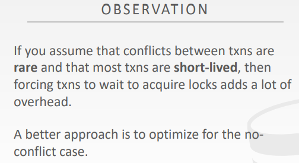
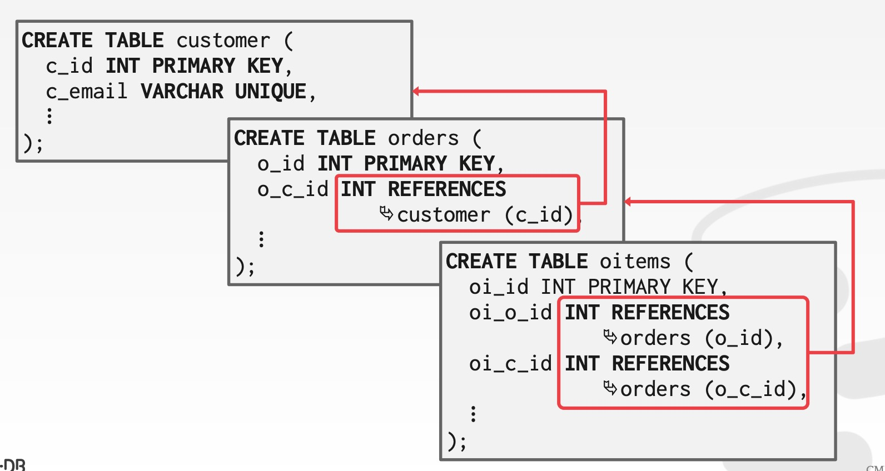
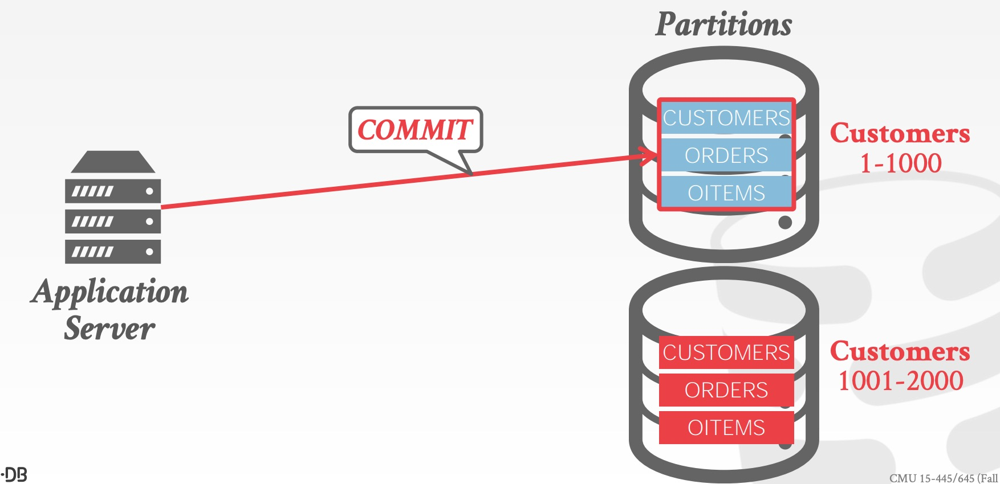

Background
并发控制的两个流派：悲观的2PL，乐观的OCC
上一章讲到的2PL其实是一种悲观的并发控制协议
它假设未来所有的事务都会发生竞争，所以在操作每一条SQL的时候都会提前加上锁
即在问题发生之前解决问题，阻止问题的发生
这种悲观的并发控制协议的缺点，主要是会降低并发度，降低性能
而另一种乐观的并发控制协议，便是本章说的基于时间戳顺序的并发控制协议

T/O Concurrency Control
针对每个事务，给它赋予时间戳，根据事务的时间戳决定它的执行顺序
如果Ti的时间戳小于Tj的时间戳，那么DBMS要保证，相当于Ti完全先发生，Tj完全后发生
Timestamp allocation
会给每个事务一个单调递增的独一无二的时间戳
实现递增时间戳的不同方法：
System Clock（系统时钟，即OS的时钟）- 有时会出问题，电脑的时间不完全精确（手机电脑的时钟都是不精确的，之所以如此精确是因为同步机制，每隔一段时间进行时间的校验）
- 比如说电脑的时钟每天都会慢一分钟，那么可能会在某个同步的时候，将时钟的时间给调回去
- 因此有可能有这种情况：时间A的来了一个事务a，系统时钟校验后居然校验到了时间A，而此时事务b来了，二者的时间戳变一样的了
Logical Counter（逻辑计数器）- 简单计数实现先后，从而避免系统时钟跳变的问题
- 分布式系统的问题在于很难在多个机子之间做计数器的校准：如果两个结点同时接收到一个事务，那么counter的校准就出现了问题
- 比如说在北京的节点收到了一个新的事务，但远在德国的节点是不能够立刻知道的
- 同时，如果德国的节点同时也接收到一个新的事务，就有可能出现这两个事务的时间戳是完全相同的
Hybrid（System Clock + Logical Counter，HLC）
Basic timestamp ordering protocol
本并发控制协议，读写数据都不需要加锁
数据库中的所有对象（tuple，即每行记录）都要附上两个时间戳：
- 读时间戳（W-TS，上次读这个行记录的事务的时间戳）
- 写时间戳（R-TS，上次写这个行记录的事务的时间戳）
每一次操作数据的时候，都要检查当前事务的时间戳和上一次操作该数据事务的时间戳，将二者进行比较
主要的宗旨：不能操作来自未来的数据

Basic T/O READS
假如此时读一个数据，发现上次修改该事务的id（写时间戳）大于当前的id，那当前事务就不能读该数据
- 那么此时当前事务就得回滚，然后重开一个新的事务（因为不能读到未来的数据）
反过来，如果上次修改该事务的id（写时间戳）小于当前的id，那么就是合法的，就可以继续读数据
- 就是说，在我之前的事务操作过后的数据，当前事务是可以操作的
- 紧接着就是更新该数据的读时间戳（变为
max（当前事务的时间戳，当前数据的读时间戳）） - 最后还需要将读到的数据，拷贝一个副本到本地（因为这个数据，后面可能会被其他的事务修改了，为了读到正确的版本，需要留一份备份；以便后续读数据的时候，读到的是本地的快照）

Basic T/O WRITES
如果当前事务的时间戳小于当前数据记录的读时间戳（或写时间戳）
- 那么当前事务就需要回滚，并重新开始一个新的事务
- 如果一个被未来的事务读过或写过的数据，当前事务还去操作它，那么就不会和TO的宗旨（不能修改来自未来的数据）
否则，即当前事务的时间戳大于该数据记录的读时间戳和写时间戳，当前事务才可以写该数据记录
- 那么当前事务就可以操作该数据
- 并且还要将操作后的数据备份到本地，以便后续重复读取
- 换句话说，这个数据所有的操作都发生在过去，当前事务才可以继续操作

Thomas write rule
TO在写数据时的一个优化规则：
如果此时事务的时间戳是小于数据的读时间戳的话，那只能abort
- 因为这个数据未来要有人读，我就不能先在改变
但如果此时事务的时间戳小于数据的写时间戳
- 就表明未来有事务要修改这个数据
- 也意味着即使当前事务修改了这个数据，后续依旧是有事务会将他覆盖掉
- 所以可以将本次的数据写成一个副本到本地（方便当前事务中，后面的语句重复读取），而不是写到具体的数据库上
- 然后继续往下执行（反正这里未来会被覆盖掉）

Recoverable schedules

使用TO，存在的一个问题是：后续事务读取的数据，默认是前面的事务已经提交了的
可是，如果前面的事务发生了回滚，那么后续的事务读取的数据便是脏读了
因为事务的回滚恢复是按照顺序恢复的，即要先恢复前面的事务再恢复后面的事务
但是你前面的事务都回滚了，后面的事务又是基于前面的事务的，那后面的事务就无法回滚了（亦或是说回滚的到的是脏数据）
即basic top，是无法恢复的（比如下图）

另外一个问题便是：这种算法会复制一份当前的数据（主要是为了实现可重复读，即保持事务中数据前后读取的一致性）
但如果我们要进行全表扫描的话，那么就会造成把整个数据库的数据都复制了一份，非常浪费空间
Conclusion
优点：
不存在加锁、释放锁的过程；不存在死锁等情况
缺点：
执行流程非常长的事务会导致饥饿
比如说有个非常早就开始的事务，它需要读取的内容非常的多
但是它可能会发现需要操作的数据都被未来的事务修改
造成该事务只能被迫的不断地abort（而重启后执行地代价又很大）

Observation
如果当前的事务比较短，事务的竞争比较少，那么无锁的方法是最好的
Optimistic concurrency control
虽然说是基于乐观的并发控制，但本质上还是TO（基于时间戳实现的；毕竟时间戳方法是不加锁的）
DBMS为每一个事务在本地都创建一个私有的空间，读取的所有数据都会保存在本地
并且每次修改的数据都保存在本地，而不是写到数据库里面
等到真正要提交的时候，会将本地的数据和数据库已有的数据进行比对
如果和别的事务操作的结果，是没有冲突的，就会全部提交数据（发生了冲突就会abort）
OCC主要分为三个阶段：Read phase（读阶段），Validation phase（校验阶段），Write phase（写入阶段）
Read phase
读阶段，是对于数据库来说的，是指将数据从数据库拷贝到本地的私有空间中（为了实现可重复读）
后续对数据的操作（读写数据），都是针对本地私有空间中的数据而言的
可以认为是将对数据的操作，都在本地执行
Validation phase
校验阶段，是指将私有空间的数据提交到数据库中，发生在commit阶段
把当前提交的数据和别的事务提交的数据，进行比较，检查是否有发生冲突
如果没有发生冲突，就进入下一个步骤
PS：在进入校验阶段的时候，才会获取到具体的时间戳（参考时间戳排序；需要保证小时间戳先发生，大时间戳后发生）
- 也就是说，在此之前都是没有时间戳的
检查冲突的大概思路：检查事务的读写冲突和写写冲突，有没有成环
而检查冲突又分为两种方法：backward validation 和forward validation
Backward validation
检验过去事务的数据，向前校验（向已经发生了、提交了的事务的数据进行校验）
比较一下，看有没有成环的冲突（即检查他们是否是可串行化的）：
没有冲突的话就提交
有冲突的话就要abort当前事务（不能abort历史的事务数据）
Forward validation
检验未来事务的数据，向后校验（问题是未来的事务还有一部分没有做，不知道未来会发生什么）
所以这里是校验未来事务和当前事务交叠的部分，还没发生的部分无法校验
因此，如果发生了冲突，这里可以灵活的选择是abort当前事务，还是哪些还在进行的事务（因为这两个事务都没有commit）

而校验又分为以下三种情况：
情况一：两个事务的执行步骤就是串行化执行的，那么校验阶段就不存在数据可以校验

情况二：T1先执行，T2后执行，T1的写操作是在T2的读操作之前
这样造成的问题就是，事务的修改一开始都是放到T1里面的私有空间里面，还没有提交（即还没有进入validation phase）
那么此时T2读取到的数据就是还没有被T1修改过的数据
因此T1在validation phase的时候，就会发现来自未来的事务（即T2）的Read phase在此之前执行了
T1就需要被迫abort（因为这不符合串行化的规则）

情况三：T1的完成READ阶段的时机早于T2的完成READ阶段的时机，同时在此刻，T1已经读取和写入的数据都和T2已经读取和写入的数据没有交集
在这种情况下，T1的validation阶段是安全的，因为它保证了T2读取的数据，要么是没被T1操作过的数据，要么是已经被T1操作完提交了的数据

Write phase
写入阶段，是指数据校验成功以后，将数据写入到具体的磁盘上
而在一些DBMS的实现上，在写入阶段会将整个数据库的数据表给上锁（主要是为了防止并发问题）
而且，因为此时是已经准备好了所有需要写入的数据，所以写入的时间是可控的（一般来说执行的时间很短，是可以接受的）
即不同事务的写入是要排队进行写入，不能同时并发写入数据的（因此会牺牲一定的并发度）
Observations
OCC在冲突比较少的场景是高效的（因为冲突太多，会造成事务都在validation阶段回滚，而且回滚的成本很高，低效）
- 在所有的事务都是只读操作的情况下，OOC的效果最好
- 或者说不同的事务之间并发执行，但是事务间基本上没有冲突（在validation阶段不存在回滚）
当数据库的数据量非常大，同时针对数据的查询是均衡的（不存在热点数据），在这种情况下冲突较少，OCC的效果就很好（因为比较少冲突的情况下，使用mutex就是浪费）
缺点：
数据的拷贝存在一定的开销（但是read阶段只是读取数据，性能不错）
Validation阶段逻辑复杂，校验流程冗杂
Write阶段会锁全表（顺序写表，不能并发写，导致并发度低下）
Abort的成本会比2PL的更大（2PL有死锁预防和检测，但是OCC是在事务执行完了以后才发现死锁or冲突，才将事务回滚，资源浪费严重）
Partition-based T/O
参考全局锁到分段锁的优化，OCC也可以将数据库分为若干个不相交的子集（可以水平分区，也可以垂直分区）
在各个partition上执行OCC，并且不同partition上的事务之间不需要检查冲突
每个partition都需要用mutex进行保护
- 每个partition都维护一个执行队列
- 每个事务都会在其需要操作的partition上排队，如果该事务在该队列拥有最小的时间戳，就会获得锁并执行
- 当事务获取到所需要的所有partitions上的锁时，事务才会开始执行（事务启动后，它可以读取写入所有分区的锁）
- 事务在执行的时候就已经被分配好了时间戳
Partition-based T/O read
事务可以在已经获取了锁的partition上读取任何内容
但如果事务试图读取一个没有获取锁的partition，将会被abort并重启
Partition-based T/O write
事务所有的写操作都是在数据库上发生
DBMS会在内核维护一个缓冲区，用来记录数据的变更（以便事务的回滚）
如果事务试图写入修改一个没有获取锁的partition，将会被abort并重启
在以下情景下，OCC是迅速高效的：
- DBMS在事务启动之前就知道它需要使用哪些partition
- 大多数事务的操作都只需要访问单个分区
Dynamic databases
此前并发协议的设计中，都忽略的一点就是新数据的插入和旧数据的删除
Phantom problem
幻读：是TO、OCC和2PL都没有考虑的问题
- 因为此前的并发控制协议中，认为写数据都是在已有的数据上进行修改
- 一种被忽略的情况是：写数据是可以凭空写一个新的数据到表里面的（即
insert和delete） - 为什么2PL解决不了？因为mutex只能锁当前的数据，无法控制新数据的插入（可以使用全表锁，但是并发度和性能都会受损）
执行两条SQL，前后读出的内容不一致，好像出现了幻觉
原因是在这期间发生了有新数据insert
可以理解为第二次读取到了，第一次读取时数据库中不存在的数据

与不可重复读、脏读的对比：
比如说查找当前的max值，第一次是A，然后其他的事务添加了数据B，使得当前的max变为了数据B，导致第二次读的时候返回的是数据B，这是幻读（侧重的是新数据的插入）
而针对同一条数据，第一次和第二次读取前后，数据不一致，这是不可重复读（侧重的是同一条数据的读取）
而如果读到的是未提交事务的数据，这是脏读
Approach
常见的三种解决办法：
Approach 1：re-execute scans
记录一下事务所有能够出现幻读的地方（例如：查询max，min值、范围查询等）
在commit前再扫描一遍这些可能出现幻读的地方
缺陷：多次内存的读取，浪费资源，性能差
Approach 2：predicate locking（谓词锁）
给SQL的WHERE谓词加共享锁
给UPDATE、INSERT、DELETE上加独占锁
比如下图，WHERE上加了共享锁，那么后续INSERT要加独享锁就会阻塞

Approach 3：index locking（索引锁）
如果给定的语句里面有索引的话，就要给这个索引所在的索引页加上锁
如果没有索引，就要给它加上表锁
主要目的就是不能让他添加或删除新数据
MySQL的实现：间隙锁
MySQL将数据和数据之间的间隙也认为是数据，例如max的查询中，将数据和数据之间的间隙上锁
如果要操作的数据是有索引的，那么就直接将区间[当前max值,正无穷)给上锁
- 比如说第一次找到max为20，就给区间
[20,max)上锁
Isolation levels
Weaker levels of isolation
已经实现了的事务并发协议，都是为了能够将事务的执行顺序，等效的转化为串行化
但是实际业务可能并不需要如此严格的隔离级别
一些比较weaker的隔离级别也可以实现业务（只要程序员coding的时候了解该隔离级别即可）
另一方面，如果强制要求可串行化
对于乐观的并发控制协议（TO、OCC），可能会出现很多abort的情况
而对于悲观的并发控制协议（2PL），则会出现死锁、锁等待等情况
因此得到的一个思路便是：是否可以降低隔离的程度，以便提高性能；因此就有了隔离级别
隔离级别，换句话说就是控制事务之间数据的暴露程度
而事务的互相暴露，则会有不同的问题发生：
- 脏读（读未提交）
- 不可重复读
- 幻读
隔离级别
PS：并不是只有这四种隔离级别，比如Oracle的最高隔离级别是快照隔离

不同隔离级别的实现

可串行化的实现：所有的读写数据都要加锁，并且还要加索引锁（防止幻读），同时严格遵守SS2PL
可重复读的实现：所有的读写数据都要加锁，同时严格遵守SS2PL（所以会有幻读）
读已提交的实现：所有的读写数据都要加锁，同时遵守弱SS2PL，但S lock是用完后立刻释放（所以会有幻读和不可重复读）
读未提交的实现：所有的读写数据都要加锁，同时遵守弱SS2PL，但没有S lock（所以会有幻读、不可重复读和脏读）
不同数据库对隔离级别的支持

Database admin survey
实际工作中对隔离级别的需求：

SQL-92 access modes
可以通过语句指定当前需要的隔离级别

Conclusion
并发控制协议的两大流派：乐观（TP，OCC）和悲观（2PL，SS2PL）
TO主要是通过给不同的事务一个严格递增的id，通过id的先后以及读写顺序，来维持可串行化，以此来找到一些并发度较高的最优解